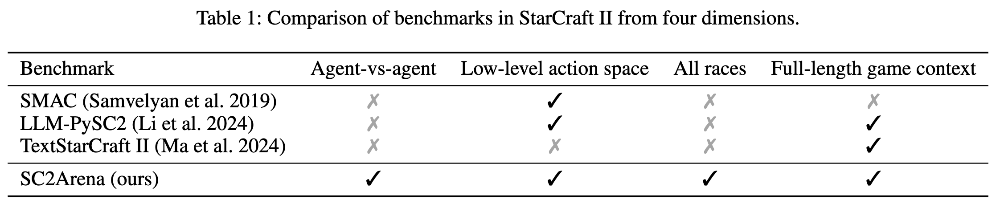
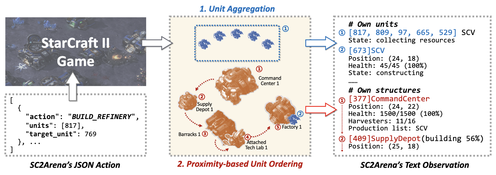
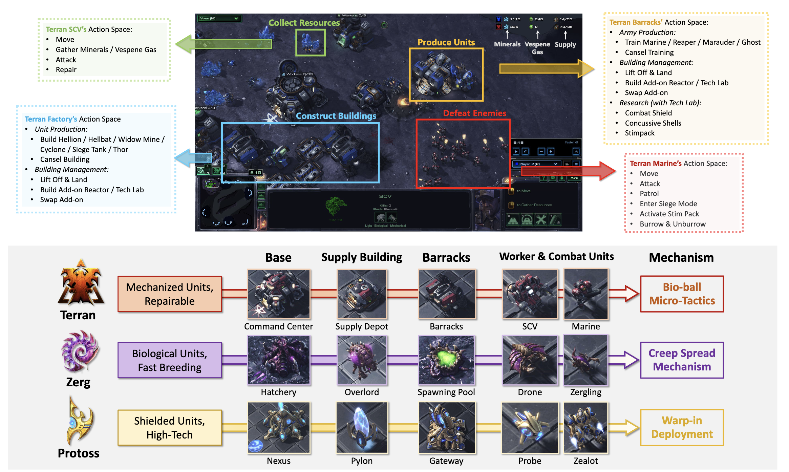
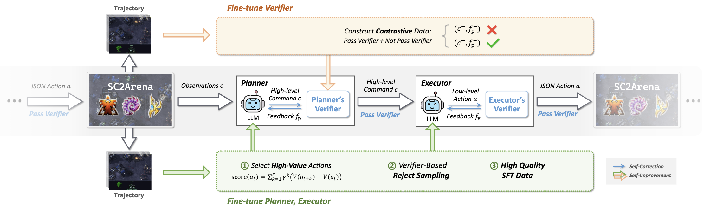
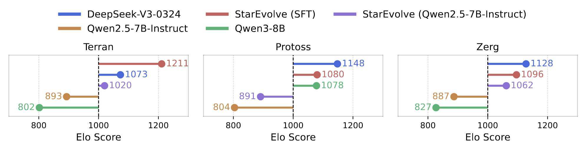
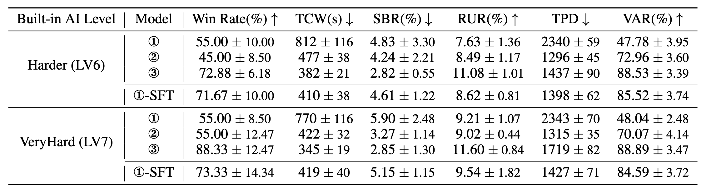
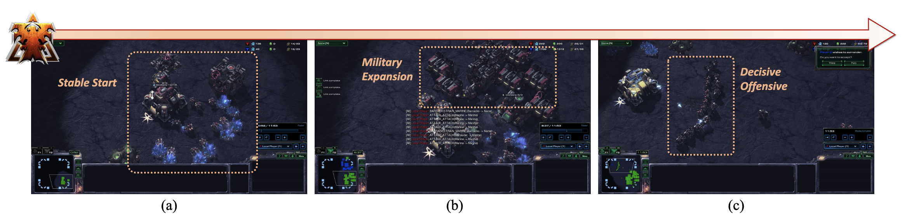

Evaluating large language models (LLMs) in complex decision-making is essential for advancing AI's ability for strategic planning and real-time adaptation. However, existing benchmarks for tasks like StarCraft II fail to capture the game's full complexity, such as its complete game context, diverse action spaces, and all playable races. To address this gap, we present SunTzu, a benchmark that fully supports all playable races, low-level action spaces, and optimizes text-based observations to tackle spatial reasoning challenges.
Complementing this, we introduce StarEvolve, a hierarchical framework that integrates strategic planning with tactical execution, featuring iterative self-correction and continuous improvement via fine-tuning on high-quality gameplay data. Its key components include a Planner-Executor-Verifier structure to break down gameplay, and a scoring system for selecting high-quality training samples. Comprehensive analysis using SunTzu provides valuable insights into developing generalist agents that were not possible with previous benchmarks. Experimental results also demonstrate that our proposed StarEvolve achieves superior performance in strategic planning.
Existing LLM benchmarks for StarCraft II often oversimplify the game by limiting playable races, abstracting away low-level actions, or focusing only on short scenarios. This prevents a true evaluation of an agent's strategic and tactical abilities. SunTzu addresses these gaps by providing a comprehensive and challenging evaluation platform.

Comparison of SunTzu with prior benchmarks, highlighting its support for full game context, all races, and complete action spaces.
LLMs struggle with raw game data due to challenges in spatial reasoning from text and information overload from numerous units. SunTzu introduces two key techniques to format game states into LLM-friendly text:

Illustration of SunTzu's text-based interface and observation optimization techniques.

We propose StarEvolve, a closed-loop agent framework designed for robust decision-making and continuous learning in StarCraft II. It features a hierarchical architecture for self-correction and a fine-tuning loop for self-improvement.

The StarEvolve framework, showing the Planner-Executor-Verifier structure for self-correction and the SFT loop for self-improvement.
To tackle the vast action space and strict syntax requirements, StarEvolve uses a two-tier system:
Both components are equipped with Verifier modules that check for errors (e.g., invalid syntax, insufficient resources) and provide feedback, allowing the agent to iteratively correct its decisions before execution.
StarEvolve continuously improves by learning from its own gameplay. We collect data from winning game trajectories and use a novel scoring function to identify high-quality decisions that lead to long-term strategic advantages. These high-quality data points are then used to fine-tune the Planner, Executor, and Verifier models, creating a powerful self-improvement loop.
Our experiments show that SunTzu effectively ranks agents based on performance. The StarEvolve framework demonstrates robust performance, outperforming strong baselines. Crucially, the self-improvement loop via fine-tuning (SFT) significantly boosts the agent's win rate and efficiency, allowing smaller models to compete with and even surpass larger ones.

Elo ratings of StarEvolve and baseline agents across all three races. The fine-tuned (SFT) version of our agent achieves the highest or competitive ratings.

① Qwen2.5-7B-Instruct, ② Qwen3-8B (no think), ③ DeepSeek-V3-0324, and ①-SFT

Visualization of a Terran game, where our agent builds a mid-game advantage and executes a decisive final attack to secure victory.
@inproceedings{anonymous2025SunTzu,
title = {SunTzu and StarEvolve: Benchmark and Self-Improvement Framework for LLMs in Complex Decision-Making Tasks},
author = {Anonymous},
booktitle = {Anonymous Conference},
year = {2025}
}